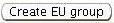
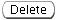
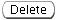

Previous Topic
Next Topic
| Common User Interface Elements
|
Previous Topic |
Next Topic |
This topic covers the common buttons that you will find on windows related to entering or editing data, including:
You may see additional buttons along with these common button on pages where you edit data. The additional buttons will be specific to the object you are accessing and/or the operation operation you are performing. Selecting these buttons may also give you the opportunity to communicate information to the system that will effect the operation you are performing, and thus may be considered Edit Operations buttons; however, the help topics pertaining to the specific operations will describe these buttons and their operations.
Whenever you are looking at a page that contains data you are expected (or permitted)
to enter or modify, you will see an  button at the bottom of the screen. Clicking on this button will show you the page
with the fields that you are permitted to enter or modify shown as
input fields of various types. This gives you
opportunity to enter data in the fields that are empty and/or change information that is
already stored in the system.
button at the bottom of the screen. Clicking on this button will show you the page
with the fields that you are permitted to enter or modify shown as
input fields of various types. This gives you
opportunity to enter data in the fields that are empty and/or change information that is
already stored in the system.
You will most often see the
button at the bottom of a Detail Data page.
In rare instances, you may see it in a different position on the screen.
When you encounter the latter, then
clicking the button will give you the oppportunity to enter or modify only the information in
the section of the screen where the button appears, while in the former case, you will
be able to edit all editable fields on the page.
Similarly, a button with a label other
than 'Edit' may give you access to 'edit mode' for a a limited set of
of information. The , which allows you to edit the groups of emissions units you
wish to include in a Title V Permit-to-Operate application, is an example of
this kind of button. Other edit-related buttons such as
 and
and
 may also apply to these more limited edit operations.
may also apply to these more limited edit operations.
Data fields that are not modifiable (even in edit mode) may be displayed along with the editable fields associated with the edit operation you have selected, but the system will not offer the data in an input field that gives you the opportunity to modify the value in the field. For example, when you are working on a Facility Detail Change, you are not permitted to modify the Facility Class or Emissions Reporting Category for your facility; only AQD personnel may make changes such as these.
If you see a page of data that has no
button, or which has the button, but it appears in gray, and nothing happens when you
click on it, they the data is "read-only". It is a snapshot of data stored in the
IMPACT System database and you are not permitted to modify it. In some cases
you may be able to modify that data through one of the In Progress Tasks or New Task
operations.
Back to Top
When you edit data, you must explicitly let the system know when you have completed the
operation. The system provides these buttons,
and
for you to use to identify
the action you want to take when you are leaving an editing session.
If you select ,
then the system will make a record of any changes you have made on the page. At this point,
the changes are saved in your working area. They will not be written to the Air
Services System database until you submit what you are working on --- the facility inventory
change, permit application, emissions inventory or compliance report. THe changes will, however,
be available to you the next time you want to work on the associated task.
If you select , then the system
will ignore any changes you have made. They will not be stored and will not be there
if you return to that page in the future.
The system provides a  button that allows
you to create instances of, for example, a permit application or an emissions inventory, after
indicating certain characteristics about the object you wish to create. Most often
you will see the button in a
that appears when you indicate that you wish to
create an object, frequently in connection with a New Task. Once you complete the requested
fields in the pop-up window and select
this button, the instance you have created will appear in a list of either In Progress Tasks
you can work on, or a list of that kind of objects associated with your facility.
(Occasionally, the button that performs this function may be labeled 'Apply'.)
button that allows
you to create instances of, for example, a permit application or an emissions inventory, after
indicating certain characteristics about the object you wish to create. Most often
you will see the button in a
that appears when you indicate that you wish to
create an object, frequently in connection with a New Task. Once you complete the requested
fields in the pop-up window and select
this button, the instance you have created will appear in a list of either In Progress Tasks
you can work on, or a list of that kind of objects associated with your facility.
(Occasionally, the button that performs this function may be labeled 'Apply'.)
You will most often find the  and
 buttons when you are
editing lists or tables of information. You can
entries to a list one-at-a-time. You may delete them either one-at-a-time or
more-than-one-at-a-time depending upon the specific list or table you are working with.
To accomplish the latter, you will be asked to check the list entries you wish to
delete. For the former you will be asked to select a radio button
(see Entering & Editing Data --> Input Fields) or click on a single entry in the list
to indicate what you want to delete.
and
 buttons when you are
editing lists or tables of information. You can
entries to a list one-at-a-time. You may delete them either one-at-a-time or
more-than-one-at-a-time depending upon the specific list or table you are working with.
To accomplish the latter, you will be asked to check the list entries you wish to
delete. For the former you will be asked to select a radio button
(see Entering & Editing Data --> Input Fields) or click on a single entry in the list
to indicate what you want to delete.
In some instances the button label will indicate the what you are adding or deleting from the list, but as long as it says 'Add' or 'Delete' it will work the same way.
You will find a  button on the window for any object
that may be submitted to the IMPACT System for processing. This includes Facility objects,
Permit Applications and various permit-related requests and notifications,
Emissions Inventories and Compliance Reports. When you select this button, the system
checks various information you have entered into the system to be sure that it is consistent,
and complete enough to support the submission you wish to make. The validation most often
accesses information you may have entered on different screens and/or at different points
in the process of creating the submission. The system will not permit you to submit
anuthing that has not been validated. Therefore, when you select any
button on the window for any object
that may be submitted to the IMPACT System for processing. This includes Facility objects,
Permit Applications and various permit-related requests and notifications,
Emissions Inventories and Compliance Reports. When you select this button, the system
checks various information you have entered into the system to be sure that it is consistent,
and complete enough to support the submission you wish to make. The validation most often
accesses information you may have entered on different screens and/or at different points
in the process of creating the submission. The system will not permit you to submit
anuthing that has not been validated. Therefore, when you select any
 button, the system will automatically
perform the appropriate validation, even if you do not explicitly request it by
clicking on the button associated with the object
you want to submit. An Information message at the top right of the screen lets you know
if the validation succeeds, as illustrated below for a permit application.
button, the system will automatically
perform the appropriate validation, even if you do not explicitly request it by
clicking on the button associated with the object
you want to submit. An Information message at the top right of the screen lets you know
if the validation succeeds, as illustrated below for a permit application.
See Exceptions for a discussion of exception handling for this complex form validation as well as other types of data validation that the system performs.
Back to TopCopyright © 1996, 2004, Oracle. All rights reserved.
{kind=link}